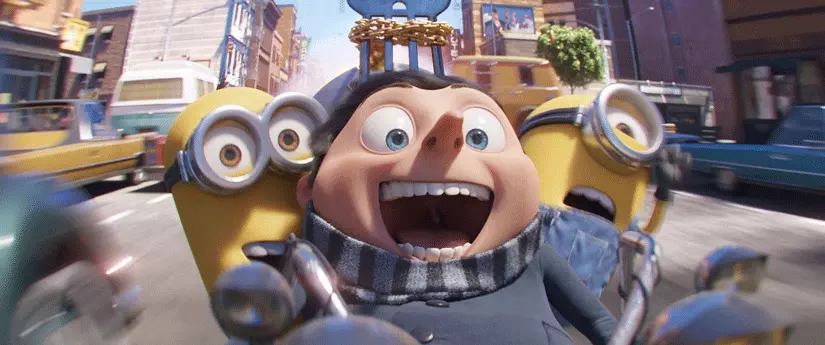

Minyonlar 2: Gru’nun Yükselişi Gişede Zirvede
Tarih: 4.07.2022 - Yazar: Esra Altun
Tüm dünyada geçtiğimiz cuma günü vizyona giren, animasyon tutkunlarının ve çocukların merakla beklediği 'Minyonlar 2: Gru’nun Yükselişi gösterimdeki ilk haftasında yaklaşık 109 milyon dolar hasılat elde ederek ABD gişesinde zirveye yerleşti ve 'Top Gun: Maverick'i ikinci sıraya attı. 3 boyutlu animasyon filmi Minyonlar 2: Gru'nun Yükselişi'nin (Minions 2: The Rise of Gru) yönetmenliğini Kyle Balda üstleniyor. Yapımcılığını Chris Meledandri ve Janet Healy'ın yaptığı, 2015 yılında vizyona giren Minyonlar'ın devamı olan animasyon, aynı zamanda Çılgın Hırsız üçlemesinin spin-off'u. Çılgın Hırsız (Despicable Me) evrenine ait beşinci film olan Minyonlar 2: Gru’nun Yükselişi (Minions: The Rise of Gru), ABD'deki ilk hafta sonunda $108,5 milyon hasılata ulaşarak Box Office ABD'nin yeni lideri oldu. 4 Temmuz Amerikan Bağımsızlık Günü'nü içeren dört günlük periyotta ise $128 milyona ulaşması beklenen film, böylelikle 2011 yapımı Transformers: Ay'ın Karanlık Yüzü (Transformers: Dark of the Moon)'nün $115,9 milyon hasılatla elde ettiği 4 Temmuz Bağımsızlık Günü tatil hafta sonu açılış rekorunun yeni sahibi olacak.
Gösterimdeki altıncı hafta sonunda da bir önceki hafta sonuna göre düşüş oranını %15'in altında tutmayı başaran Top Gun: Maverick, $25,55 milyonla ikinci sırada yer alırken, dünya genelinde toplamda $1,1 milyar hasılatı aşmayı başardı.Vizyondaki ikinci hafta sonunu geride bırakan Elvis, $19 milyonla üçüncü basamakta kendine yer bulurken Jurassic World: Hâkimiyet (Jurassic World Dominion) gösterimdeki dördüncü hafta sonunda $15,65 milyonla dördüncü sırada yer aldı. Ethan Hawke'lı Siyah Telefon (The Black Phone) ise ikinci hafta sonunda $12,3 milyonla beşinci basamakta yer alan yapım oldu.
Minyonlar 2: Gru’nun Yükselişi Konusu
Despicable Me serisiyle popüler kültürde yer edinen Minyonlar'ın ikinci filmi Minions: The Rise of Gru, 70'li yıllarda tarihin en büyük kötülerinden biri olma hayali kuran genç Gru ile yolları kesişen Minyonlar'ın, kötülükleriyle nam salan Vicious 6 ekibine girmeye çalışan Gru'ya yardım etmelerini konu ediniyor. Stuart, Kevin ve Bob bir süpermarketten muzlarını alamadıkları için oldukça sinirlidir. Bu duruma çözüm bulmak isteyen ekip, Beyaz Saray’a doğru yola koyulurlar. Durumu şikayet etmek için Beyaz Saray’a geldiklerinde ise kendilerini kapının önünde bulurlar. Kovuldukları için şaşkın ve bir o kadar da sinirli olan Stuart, Kevin ve Bob, kendilerine yapılanların intikamını almak için ABD hükümetini devirmek için zorlu bir maceraya atılır. Bu maceralarında onlara Gru da eşlik edecektir.